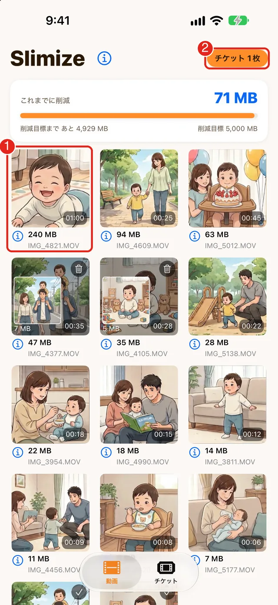
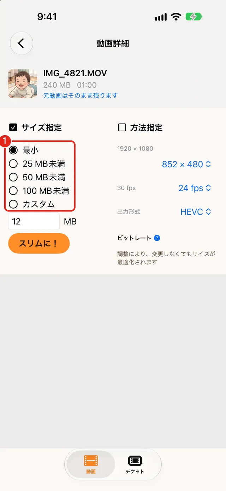
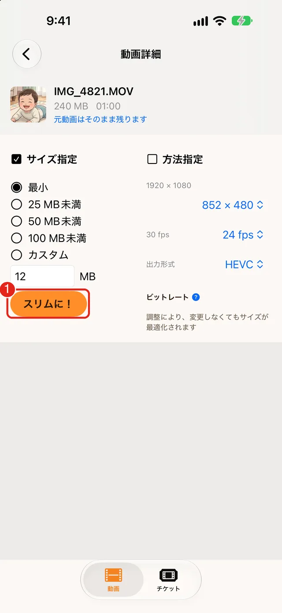
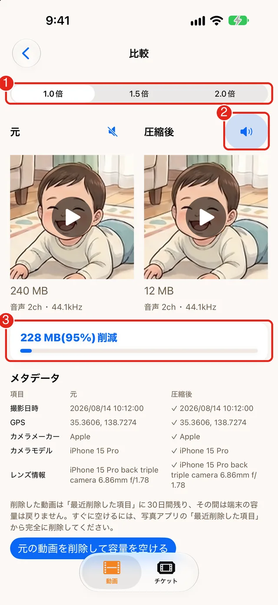
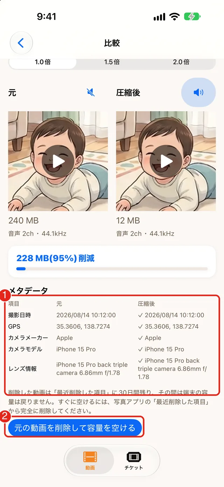

使い方
はじめて使うときの流れです。慣れれば、1本あたり数タップで終わります。
動作環境：iOS 17 以上の iPhone
-
1写真へのアクセスを許可する
はじめて開くと、写真へのアクセスを求める画面が出ます。「フルアクセス」を選んでください。
「制限付きアクセス」を選ぶと、あなたが選んだ動画だけが一覧に表示されます。あとから変えるときは 設定 › Slimize › 写真 で「なし」「制限付きアクセス」「フルアクセス」から選べます。
-
2動画を選ぶ
動画は容量の大きい順に並びます。上にあるものほど、容量を圧迫している動画です。スリム化したい動画をタップします。
画面を見る（赤い印つき）

- いちばん大きい動画が先頭に並びます。スリム化したい動画をタップして選びます。
- 右上に、いまのチケットの枚数が出ます。
-
3サイズを選ぶ
「最小」「25 MB未満」「50 MB未満」「100 MB未満」「カスタム」から選びます。「カスタム」では、MB数を入力します。「25 MB未満」などの上限を選んだときは、できあがったサイズを実際に確かめ、上限を超えていれば自動で圧縮し直します。それでも超える場合は保存しません。
解像度・フレームレート（30／24 fps）・出力形式（HEVC／H.264）を自分で決めたいときは「方法指定」を使います。
画面を見る（赤い印つき）

- 「サイズ指定」の選択肢です。最初は「最小」が選ばれています。
-
4「スリムに！」を押す
処理が終わるまで、Slimize を開いたままにしてください。他のアプリへ切り替えると、中断される場合があります。
スリム化したあと、撮影日時・位置情報などが残っているかを確認し、比較画面のメタデータに表示します。
画面を見る（赤い印つき）

- 「スリムに！」を押すと始まります。元の動画はそのまま残ります。
-
5見比べる
「比較」画面で、元の動画（左）と圧縮後の動画（右）を、音声つきで見比べられます。画質に納得できなければ、元の動画は削除せず、そのまま残しておけます。
画面を見る（赤い印つき）

- 再生速度（1.0倍・1.5倍・2.0倍）を切り替えます。
- どちらの音を聞くかを選ぶスピーカーのボタンです。
- 減らせた容量と、その割合です。
-
6元の動画を削除する
納得できたら、画面の下にある青いボタンで元の動画を削除します。iOS の確認画面で「削除」を選ぶと、元の動画が削除されます。アプリが自動で削除することはありません。
画面を見る（赤い印つき）

- メタデータの表です。撮影日時・GPS・カメラの情報が、元と圧縮後で同じか確かめられます（✓ は残っている印）。
- 青いボタンで、元の動画を削除します（「最近削除した項目」に30日残ります）。
削除した動画は、写真アプリの「最近削除した項目」に30日間残り、その間は容量が戻りません。すぐに空けたいときは、写真アプリの アルバム › 最近削除した項目 から完全に削除してください。
無料で使えます：チケットのしくみ
アプリは無料でダウンロードできます。動画1本をスリム化するたびに「チケット」を1枚使います。チケットは買わなくても、使うだけでたまります。
- はじめに5枚：インストールしてすぐ、数本を試せます。
- 毎日1枚（ログインボーナス）：アプリの「チケット」タブの「受け取れる報酬」から、その日の分を自分で受け取ります。
- 削減量の節目ボーナス（2.01.01 以降）：これまでに減らした容量の合計が、1 GB・2 GB・3 GB に届くと、それぞれ1枚・2枚・3枚。以後は 5 GB ごとに5枚もらえます。
- はじめの7日間の歓迎ボーナス（2.01.01 以降）：チュートリアルを最後まで見ると5枚、3日連続ログインで3枚、7日連続で10枚（それぞれ1回だけ）。
有料の追加購入チケットは準備中です。買わなくても、上の方法でチケットがたまるので、急いで動画を減らしたいとき以外は、無料のまま使えます。現在、月額プランはありません。
そのほかの使い方
- 方法指定: 解像度・フレームレート（30／24 fps）・出力形式（HEVC／H.264）を選んでスリム化できます。
- チュートリアルの再表示: ホームの「i」から、いつでも見直せます。